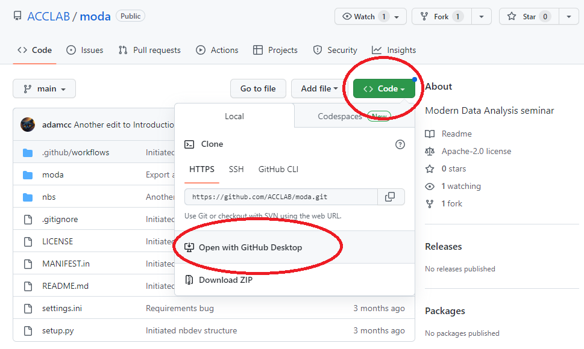
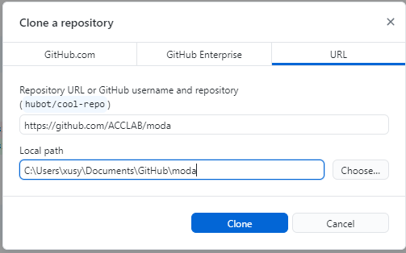
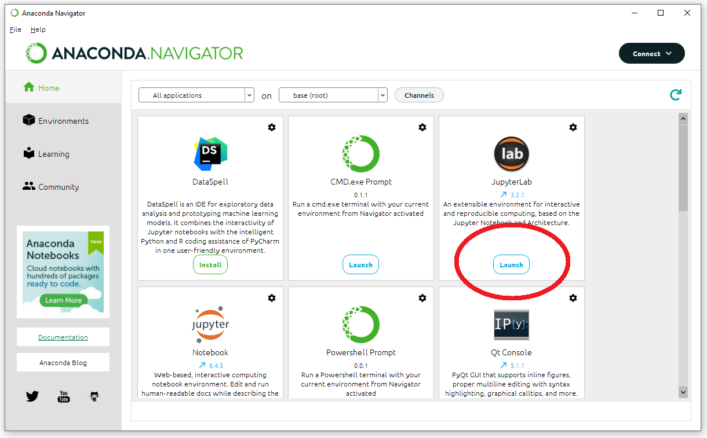
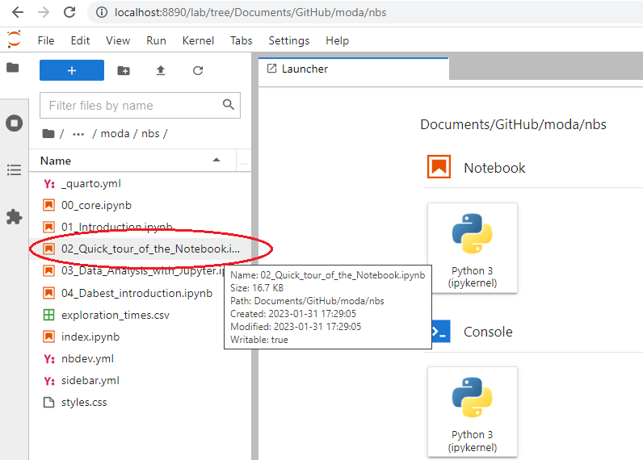

The social reasons to learn programming also apply to research programming.
<iframe width="600" height="400"
src="https://www.youtube.com/embed/kgicuytCkoY">
</iframe>
The social reasons to learn programming also apply to research programming.
As research techniques and data collection have become almost completely digital and analysis methods grow more sophisticated, it is critical that scientists develop three skills: data visualization, statistics, and coding. Unfortunately, many undergraduate biology programs emphasize the memorization of numerous facts, while failing to offer courses in data graphics, estimation statistics, or scientific programming. In this session, we offer a basic orientation on these topics.
If any issues can’t be resolved with the below steps, we can work on it in the class together.
You’ll need to get set up with a version-control system. Go to GitHub and get an account. Download and install GitHub Desktop.
Retrieve the course materials from GitHub. Go to the course repository (“repo”) at https://github.com/ACCLAB/moda. Click the green Code button and then select Open with GitHub Desktop. You will be prompted to select a directory for the local repository. If you are using a PC it can be something like this:

If you are using a mac, it can be something like “//Users/YOURUSERNAME/Documents/GitHub/moda”.
To get set up with Python and Jupyter notebooks, install the Anaconda Distribution on your laptop.
Open Anaconda Navigator and launch JupyterLab by clicking on it.JupyterLab will open in a browser tab.
In the File Browser panel in JupyterLab, navigate to the folder where you cloned the course repo (refer to step 2). Double click on ‘nbs’. You should see a list of notebook files. Open “02_Quick_tour_of_the_Notebook.ipynb” by double-clicking on the icon shown in the JupyterLab browser window.
Work through the notebook. Familiarize yourself with basic Python, and with working in the JupyterLab environment.
Read about pandas, matplotlib, and seaborn.
Try using the estimationstats.com web app to analyze your own grouped data.
Open and have a look at the sample multivariate data. Go through the introductory notebook that demonstrates data analysis.
We recommend the following texts to strengthen your data-analysis and presentation skills. They can be dipped into over the coming months or years, and used as references. Being familiar with some or all of this material will help you write your first-author paper/s and doctoral thesis.
Estimation: Our estimationstats.com site has introductory information on estimation and specific types of analyses and effect sizes.
Datavis: Claus Wilke’s free online book is a great introduction to data visualization, and a style guide. It is written in R, which is the best language for statistics.
Coding: There are many online resources to learn coding. Published in 2021, A Data-Centric Introduction to Computing uses a Python-like teaching language (Pyret) to introduce key concepts in computer science.
Estimation: If you want to learn about estimation statistics in greater depth, there is Calin-Jageman and Cumming’s textbook that is well-written, funny, and clear. The authors also run a blog.
Estimation: Christoph Bernard’s account of the pioneering experience of a major journal (eNeuro) recommending estimation as standard: the initial announcement, author feedback, and after one year.
Coding: The paid coding tutorial Learn Python The Hard Way has a good reputation, but there are also many free options (see DCIC above) with great reviews.
Coding: It will help to learn to use your computer’s Unix-style command-line shell. This interface will allow you to use package managers like conda and homebrew, version-control tools like git, and other important tools. There are many books about the shell, with only minor differences between MacOS, Windows, and Linux.
Datavis: A brief guide to oral–visual data presentations (talks).
Datavis: A reader-funded textbook on typography, including for slides. Since so much communication relies on text, typography is an important part of the data interface.
Datavis: For historical perspectives, Edward Tufte’s books are classic texts to develop your design skills, and there is Friendly and Wainer’s History of Data Visualization.
As you progress, you will want to develop your skills in areas like bioinformatics, image processing, and/or machine learning. The iris dataset is widely used for training in multivariate data analysis, with many online tutorials.